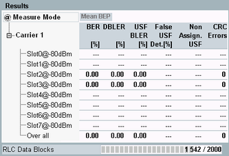

Measurement Results
The results of the BER measurement are shown in the left part of the tab. They are described briefly below.

BER PS results
For each slot, the configured DL power is displayed for information (in the figure either -80 dBm or off).
- "BER": Bit error rate, only class II bits transmitted
- "DBLER": Data block error rate, percentage of received blocks with at least one erroneous data field
- "USF BLER": Uplink state flag block error rate, percentage of USFs in data blocks assigned to the MS but received in error so that the MS fails to start transmission
- "False USF Det.": False USF detection, percentage of USFs in data blocks not assigned to the MS but received in error so that the MS nevertheless starts transmission
The USF duty cycle must be less than 100% to obtain a valid result, see "USF Duty Cycle" . - "Non Assign. USF": Number of USFs in data blocks not assigned to the MS.
- "CRC Errors": Number of RLC data blocks with failed CRC check. The check is performed in the R&S CMW on the looped-back data. Bits in data blocks with CRC errors do not contribute to the measurement results. In SRB loopback mode, no CRC check is performed.
- "RLC Data Blocks/Radio Blocks": Number of evaluated RLC data blocks without CRC error (test mode B) or number of radio blocks (SRB loop). For configuration of the total number of blocks to be evaluated, see "RLC Data Blocks".